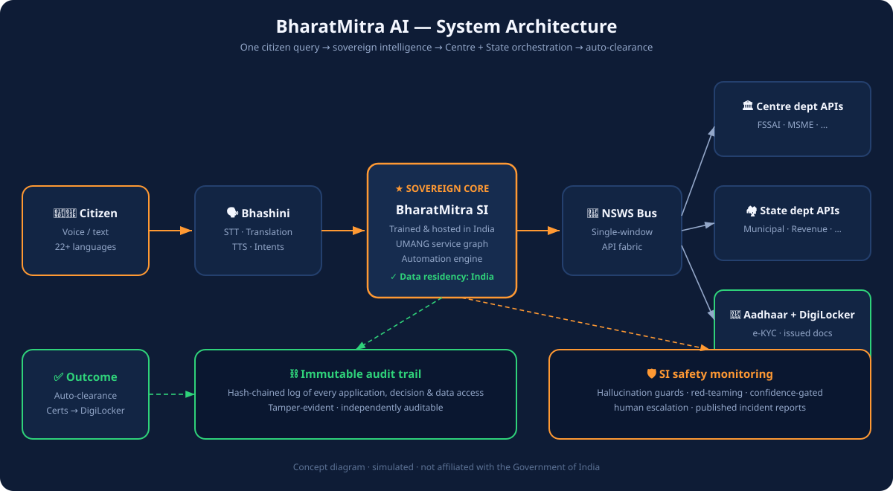

BharatMitra AI is a proposed national SI chatbot that takes a citizen's voice or text query in any of 22+ languages — and completes the work: Aadhaar-verified, DigiLocker-powered, orchestrated across Centre and State, auto-cleared where rules suffice. No forms. No offices. No intermediaries. No bribes.
Pick a real-life scenario. BharatMitra verifies identity, fetches issued documents, files across Centre and State — and auto-clears. Switch languages; the service graph is identical. 🎙 Tap the mic and speak your own query, or 🔊 hear the assistant reply.
Concept demo with simulated data. Voice input uses your browser's speech recognition (Chrome recommended); replies use built-in text-to-speech. No real Aadhaar, DigiLocker or departmental systems are touched.
No backend in this demo, so the frontend shows the complete ambition: everything a citizen should be able to do from one conversation.
Bhashini-powered speech in every scheduled language. Speak like you talk to a neighbor — the demo above even answers aloud.
Face, fingerprint or OTP depending on what's at stake. Consent logged, every single time.
Issued documents auto-fetched. Citizens never upload what the state already issued; forgery dies at the source.
NSWS-style service bus fans one request across Centre, State and local bodies as a single orchestrated workflow.
Criteria fully met → deemed approval within SLA. Officers handle only exceptions and appeals.
Every application traceable live — like tracking a parcel, but it's your licence, certificate or pension.
Hash-chained log of every decision and data access. Tamper-evident, independently auditable.
Hallucination guards with cited rules, red-teaming, confidence-gated human escalation, published incident reports.
Fees collected inside the chat. Receipts land in DigiLocker automatically.
Licence expiring? Scholarship deadline near? BharatMitra tells you before you have to ask.
Rejected? Appeal without leaving the conversation — with the full audit trail attached as evidence.
Common Service Centres and IVR fallback so the non-literate and the offline are served first, not last.
The architecture proposed to the PMO, Telangana and Andhra Pradesh — Telangana & AP as pilot states.
BharatGen-class model trained and hosted in India. Data residency at home — no foreign commercial model in the loop, unlike America.gov's Gemini + Grok.
Voice + text in all 22 scheduled languages. UMANG's service catalogue becomes conversational intents — speak, don't fill forms.
Central ministries + state departments expose standard APIs. One query fans out across Centre, State and local bodies as a single workflow.
e-KYC per risk level; documents auto-fetched as issued records. The citizen never uploads what the state already issued.
Criteria fully met → deemed approval within SLA. Human officers handle only exceptions, appeals and genuinely discretionary calls.
Hash-chained audit trail for every decision; hallucination guards, red-teaming, confidence-gated human escalation, published incident reports.
How one citizen query flows through the stack — and where the trust guarantees sit.

As proposed in the policy document. Telangana and Andhra Pradesh prove it first.
The US launched its AI front door on 29 Sept 2026. India can open a better one — sovereign, multilingual, and actually completing the citizen's work.
| Dimension | America.gov (USA) | BharatMitra AI (proposed) |
|---|---|---|
| Capability at launch | Information only; transactions from 2027 | Transactional from day one |
| Intelligence | Foreign commercial models (Gemini, Grok) | Sovereign Intelligence, hosted in India |
| Languages | 3 (voice) | 22+ scheduled languages |
| Identity | Login.gov (future) | Aadhaar + national SSO (universal today) |
| Documents | Citizen uploads PDFs | DigiLocker issued docs, auto-fetched |
| Integration | Federal agencies only | Centre + States + local via NSWS APIs |
| Discretion removal | Not addressed | Auto-clearance + immutable audit |
Every fact about America.gov below is cited from launch-day reporting; every India Stack claim from the programmes' official publications. Full bibliography in the repo README.
The full proposal asks the PMO for a national mandate on the lines of the US executive order — and Telangana & Andhra Pradesh to sign on as the two pilot states proving centre-state orchestration first.